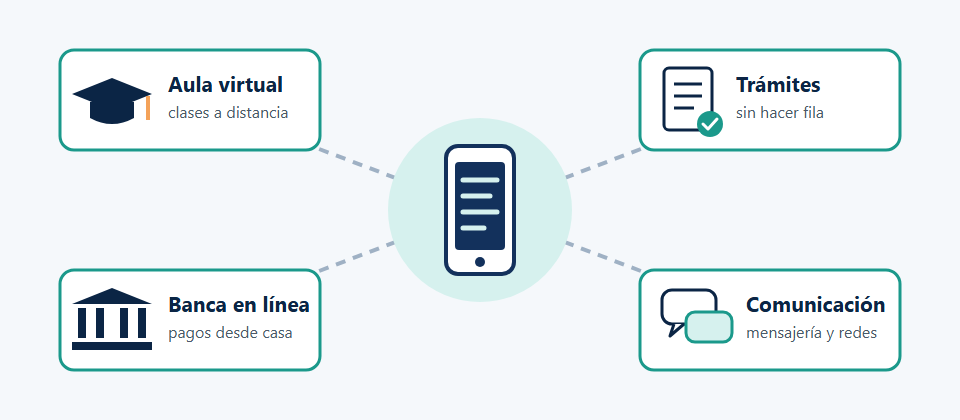
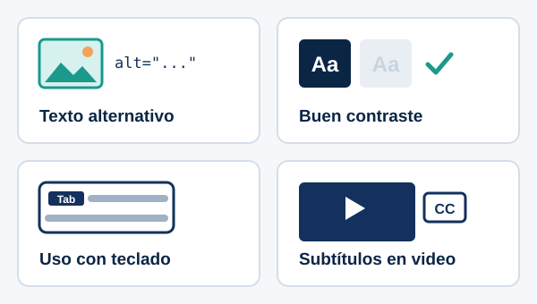

Educación a distancia
Las aulas virtuales permiten estudiar una carrera sin vivir cerca de la universidad. En el entorno virtual de aprendizaje están los materiales, los foros, las tareas y las calificaciones, y todo funciona desde el navegador.
Impacto de las tecnologías web en la sociedad y los negocios
La web cambió cosas tan cotidianas como estudiar, pagar una cuenta o hablar con la familia. En esta página se resumen cuatro cambios que se notan en el día a día y también los problemas que llegaron con ellos.

Las aulas virtuales permiten estudiar una carrera sin vivir cerca de la universidad. En el entorno virtual de aprendizaje están los materiales, los foros, las tareas y las calificaciones, y todo funciona desde el navegador.
Muchos servicios públicos se consultan y se inician en línea. En Ecuador, el portal gob.ec reúne la guía oficial de trámites y servicios del Estado.
La mensajería, las videollamadas y las redes sociales acercaron a familias separadas por la distancia y les dieron una vitrina a grupos y emprendimientos pequeños.
Noticias, horarios, mapas y precios se consultan en segundos desde el celular. Antes había que llamar, preguntar o acercarse al lugar.
| Actividad | Antes | Con las tecnologías web | Ejemplo en Ecuador |
|---|---|---|---|
| Estudiar | Clases presenciales con horario fijo | Aula virtual disponible a cualquier hora | Carreras en modalidad a distancia con aula virtual |
| Hacer un trámite | Ir a la ventanilla y hacer fila | Consulta e inicio del trámite en línea | Guía oficial de trámites gob.ec |
| Pagar servicios | Ir a la agencia o al banco | Banca en línea y pagos desde el celular | Banca web de las entidades financieras |
| Comunicarse | Llamadas y cartas | Mensajería, videollamadas y redes | Familias en contacto con parientes en el exterior |
| Divertirse | Comprar la entrada en la taquilla | Registro y reserva desde la página web | Centros de entretenimiento con registro en línea (ver el caso práctico) |
| Fuente: elaboración propia a partir de Torres Guarnizo (2026). | |||
Una página bien hecha también la puede usar una persona con discapacidad visual o motriz. Las pautas de accesibilidad del W3C piden, entre otras cosas, texto alternativo en las imágenes, buen contraste, que todo funcione con el teclado y subtítulos en los videos. Por eso cada imagen de este sitio tiene su atributo alt.

No todo es positivo. Estos son algunos problemas que vienen con la web: